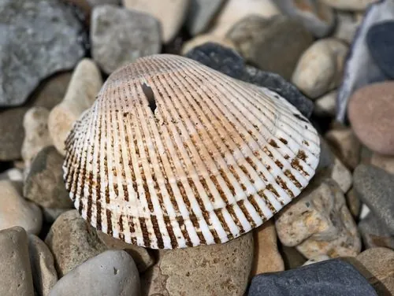

软体动物 · 动物界
魁蚶 Anadara broughtonii

壳面有放射状粗肋、壳内带血红色的大型蚶类，栖于泥沙质浅海，中国北方与韩国的重要养殖贝类。
- 分类
- 门软体动物门纲双壳纲目列齿目科蚶科属毛蚶属
- 栖息环境
- 泥沙底质浅海，埋栖于沙泥中
- 地理分布
- 中国黄海、渤海及朝鲜半岛、日本沿海
- 保护级别
- 重要经济贝类，野生资源受采捕压力，以养殖补充
物种志
魁蚶的壳长可达八至十厘米，壳形厚重，左右壳略等，壳面有三十余条放射状的粗肋，肋上覆有黑褐色绒毛状的壳皮。壳内面白色，壳缘有细密的齿，铰合部有一列小齿。足部发达，呈橙红色，血液中含血红蛋白，因此开壳时可见鲜红的体液，这也是血蚶一名的由来。
它分布于中国黄海、渤海以及朝鲜半岛、日本沿海，栖息在泥沙底质的浅海，埋栖于沙泥中，靠足部挖掘，以滤食浮游生物和有机颗粒为生。它雌雄异体，繁殖期在夏季，幼虫浮游一段时间后沉降附着。由于肉质脆嫩、味道鲜甜，它是中国北方沿海的重要养殖贝类，也是韩国血蚶的主要种类，养殖需要清洁的水质和适宜的沙泥底质。
形态与习性
- 壳长可达八至十厘米，壳质厚重
- 壳面三十余条放射粗肋，覆黑褐绒毛壳皮
- 血液含血红蛋白，开壳可见红色体液
- 食性滤食浮游生物与有机颗粒
- 繁殖夏季繁殖，幼虫浮游后附着
- 经济中国北方与韩国重要养殖贝类
趣味知识
- 它的血是红的，因为它和脊椎动物一样用血红蛋白运输氧气，这在贝类里并不多见。
- 壳面上那一圈圈粗肋摸上去像锉刀，是它埋沙时增加摩擦的构造。
- 北方沿海吃血蚶讲究火候，一烫即起，肉嫩汁鲜。